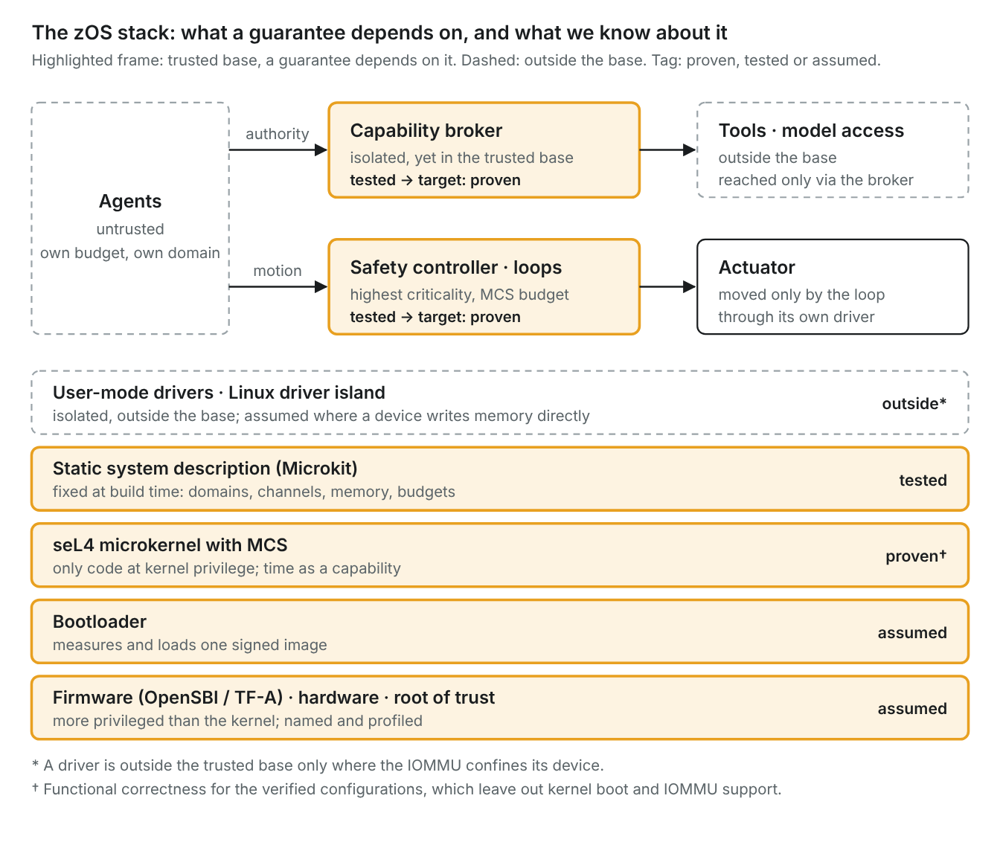
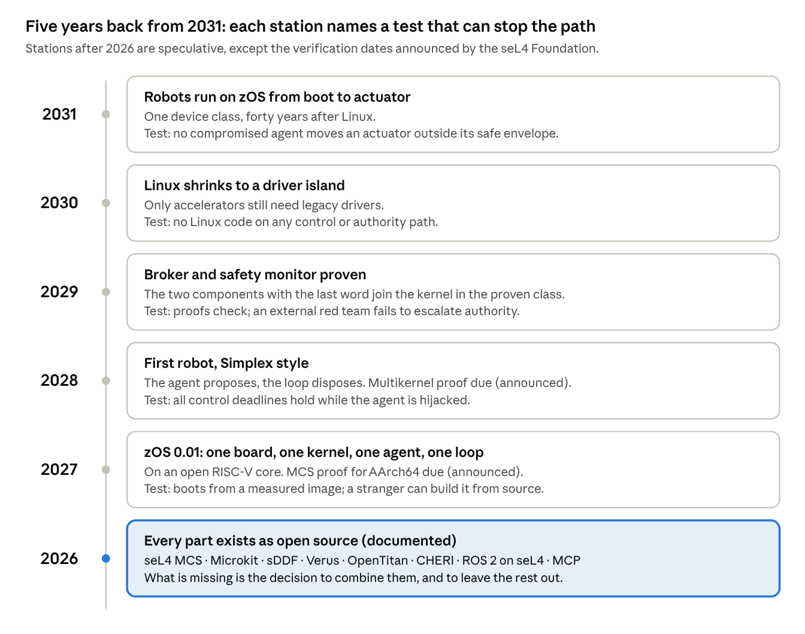

Abstract
This paper proposes zOS, the zero operating system: an operating system reduced to what cannot be removed. zOS consists of a bootloader, a formally verified microkernel, and the bare minimum needed to run AI agents safely and in real time. Nothing in zOS is new. Every component already exists as open-source work: the seL4 microkernel and its mixed-criticality extensions, its static system framework and device driver framework, capability-based security, open silicon roots of trust, and open protocols for agents and their tools. What is new is the combination and the rule that binds it: whatever is not needed to run agents is not in the system, and whatever is in the system is proven, isolated, or explicitly named as trusted.
We argue the case from the history of 1991, from three shifts visible in 2026, and from the physical turn of agents into robots, which makes real time a first principle rather than an option. We also state where the design can fail. The horizon is deliberately short: five years, to 2031.
Keywords: microkernel, seL4, formal verification, real time, mixed criticality, object capabilities, AI agents, robotics, open source
Prologue: Imagine it’s 1991
On 6 August 1991, a researcher at CERN posts a note about a project called WorldWideWeb to the newsgroup alt.hypertext and invites others to join (W3C 2016). Nineteen days later, on 25 August, a student at the University of Helsinki writes to comp.os.minix: “I’m doing a (free) operating system (just a hobby, won’t be big and professional like gnu) for 386(486) AT clones” (Torvalds 1991). The first code follows in September. Neither author knows what he has started. The web will connect the planet; the hobby will end up in servers, phones and much of what lies in between.
What made that moment fertile was not brilliance alone. It was a convergence: cheap hardware nobody owned, a network that let strangers collaborate, a licence that kept the work open, and an idea small enough to start that evening.
Now imagine it’s 2026. The machines that matter are no longer only desks and servers. They are agents: programs that read, decide and act on their own, and increasingly do so with arms, wheels and rotors. Finding flaws in software has become cheap, because machines now do it. Proving software correct is becoming cheaper, for the same reason. Almost everything one would need to build a new foundation already exists, scattered across open-source projects, waiting to be assembled.
We are, once again, about to release a few lines of code into a world that will be very different from today. This paper asks what those lines should be. Our answer is: as few as possible.
1 The idea: zero as a design rule
zOS stands for zero OS. The name is a design rule, not a slogan: start from nothing and add only what cannot be left out. Three things cannot be left out.
- A bootloader that brings up the machine, measures what it loads, and hands over to the kernel.
- A microkernel that isolates components, moves messages between them, and schedules time. Nothing else runs in privileged mode.
- The bare minimum to run agents: a way to reach a model, a way to reach tools, a broker that hands out authority, and real-time loops for anything that touches the physical world.
Everything else, from file systems and window managers to compatibility with existing software, lives outside the core or does not exist at all. Where legacy is unavoidable, it runs as a guest in an isolated virtual machine.
One rule binds the components. Every part of zOS falls into exactly one of three classes. It is proven correct against a specification, or isolated in a compartment whose boundary proven code enforces, or trusted, and then it is named, listed and kept as small as possible. The third class is not a weakness to hide. Firmware, boot code and devices that write to memory directly cannot yet be proven or confined, and a design that pretends otherwise is lying (Section 6).
The second principle is time. A robot arm, a drone or a vehicle does not fail gracefully when a deadline is missed. zOS therefore treats time as a resource protected by the kernel, like memory, from the first line of code (Section 4).
The third principle is that zOS invents nothing. Section 5 shows that each component exists today as open-source work. The contribution of this paper is the selection, the composition and the rule.
2 Why now
2.1 What 1991 teaches
On 29 January 1992, Andrew Tanenbaum declared Linux obsolete in the same newsgroup: it was monolithic and tied to one processor family (DiBona et al. 1999). On design, he had the stronger case. Linux won anyway, on cheap hardware, under the GPL, and by accepting contributions pragmatically.
The microkernel did not lose on its own, though. Mach, the flagship of the 1980s, was slow. Jochen Liedtke rebuilt the idea from scratch and made inter-process communication up to 22 times faster than Mach for short messages (Liedtke 1993); against contemporary microkernels the gap was roughly a factor of 10 to 20 (Heiser and Elphinstone 2016). From this L4 line came seL4, the first general-purpose kernel with a machine-checked proof of functional correctness (Klein et al. 2009). Mach survives mainly inside Apple’s hybrid XNU kernel (Apple n.d.).
The lesson is double. A good design is necessary but not sufficient: timing, licence, drivers and distribution decide. And the better design needs a moment in which its cost falls. We argue that 2026 is such a moment.
2.2 Finding flaws has become cheap
In the final of DARPA’s AI Cyber Challenge in August 2025, autonomous systems found 54 of 63 planted vulnerabilities, patched 43 and discovered 18 real ones (DARPA 2025). In April 2026, Anthropic reported that an unreleased model had found thousands of high-severity vulnerabilities, including some in every major operating system and web browser, among them a 27-year-old flaw in OpenBSD (Anthropic 2026a). A month later the company and around 50 partners reported more than 10,000 high- or critical-severity findings; the bottleneck had moved from finding to verifying, disclosing and patching (Anthropic 2026b).
When finding flaws is cheap, every line of unproven privileged code becomes a liability. The Linux kernel source approached 40 million lines in early 2025, about 25 million of them drivers (Leemhuis 2025). The rational response is less privileged code, not more patches.
2.3 Proving correctness is becoming cheaper
seL4’s first proof covered about 8,700 lines of C and took, together with design and implementation, roughly 25 person-years (Klein et al. 2009; Trustworthy Systems n.d.-a). Two developments now push that cost down. Verification tools for Rust such as Verus check systems code 3 to 61 times faster than earlier tools (Lattuada et al. 2024). And language models, paired with a proof checker that rejects every wrong step, generate proofs: a neuro-symbolic method proves 77.6 per cent of the seL4 theorems in the FVEL benchmark, though only about 20 per cent of those whose proofs exceed ten lines (He et al. 2026). Short proofs are getting cheap; long ones, and the invariants behind them, are not yet.
2.4 Agents act, and increasingly in the physical world
Classical operating systems grant a process the full authority of its user. Norm Hardy described in 1988 why this fails: a program acting on behalf of one party misuses authority granted by another, a confused deputy (Hardy 1988). Indirect prompt injection is the same pattern: instructions hidden in data steer an agent that acts with its user’s rights (Greshake et al. 2023). Heuristic defences do not hold: adaptive attacks broke 12 published defences, most of them with success rates above 90 per cent (Nasr et al. 2026). The structural answer is old: authority must be passed explicitly, as capabilities (Dennis and Van Horn 1966; Miller 2006).
At the same time, agents are acquiring bodies. Robot stacks now separate a reasoning model that plans and calls tools from an action model that drives the motors (Google 2025). Action models emit motor commands in chunks so that a robot keeps moving at 50 Hz while the slower model thinks (Black et al. 2025). And a project for US Army unmanned ground vehicles has built proofs of concept that run ROS 2, the common robot middleware, on seL4 (Lide 2026). For such systems a missed deadline is not a slow web page. It is a dropped load or a collision.
3 Anatomy of zOS
zOS has six layers. Read from the bottom, each one exists only because the one above cannot work without it.
Hardware and root of trust. zOS needs memory management, an IOMMU for devices that write to memory directly, and a root of trust that measures the first code to run. An open option exists: OpenTitan, an open-source silicon root of trust, reached its first production chip in 2025 (CNX Software 2025). Where available, CHERI adds unforgeable pointers in hardware; it is being standardised for RISC-V (Moore 2026). This layer is trusted. zOS states a hardware profile instead of assuming any hardware will do.
Bootloader. It measures and loads one signed, static system image and then gets out of the way. It holds no policy and stays resident for nothing. Boot code lies outside seL4’s verified configurations (seL4 Foundation n.d.-a), so this layer, too, is trusted, and kept small for that reason.
Microkernel. seL4 with its mixed-criticality (MCS) extensions. MCS treats time, like memory, as a resource protected by capabilities (Heiser 2026). Its C-level verification is complete for RISC-V; AArch64 is targeted for the third quarter of 2027 (seL4 Foundation n.d.-b). This is the only code that runs privileged, and it is proven.
Static system. The whole system is declared in one description: which isolated programs exist (protection domains), which may talk (channels) and which memory they share. A tool turns that description into the bootable image (seL4 Microkit n.d.). Nothing is loaded into the core at run time. A system whose structure is fixed at build time can be checked, scheduled and audited before it ever runs.
Drivers. Drivers run in user mode, each with access only to its own device registers (Parker 2022). Legacy drivers, above all for graphics and AI accelerators, run inside a Linux virtual machine that serves as a driver island (Heiser et al. 2025). These parts are isolated as far as memory goes. Wherever a device can write to memory directly and the IOMMU configuration is not proven, the driver is trusted and listed as such.
The agent minimum. Four components, no more:
- Model access: local inference on an accelerator, reached through the driver island, or remote inference over the network.
- Tool access: an open protocol for connecting agents to tools. The Model Context Protocol has been governed by the Agentic AI Foundation under the Linux Foundation since December 2025 (Anthropic 2025).
- Capability broker: the only component that hands out authority. It grants capabilities that are attenuated, time-limited and revocable. It, not the agent, words every request a human sees.
- Agents: untrusted tenants, each in its own protection domain, with a CPU budget enforced by the kernel’s scheduling contexts.
Next to the agents, and above them in criticality, sit the real-time loops: control, safety monitoring and actuation. Section 4 explains why they, not the agents, have the last word.

Only seL4 runs privileged, and it is proven. Everything above it is isolated by the kernel; everything below it is trusted, and therefore named.
4 Real time throughout
Agents are slow and fallible. Control loops are fast and must not fail. zOS builds on that asymmetry instead of hiding it.
Time is a protected resource. In seL4 MCS, CPU time is handed out through capabilities, with budgets the kernel enforces (Heiser 2026). An agent that loops, stalls or is hijacked exhausts its own budget, not the budget of the arm controller. Memory isolation keeps a compromised agent from writing into the loop; time isolation keeps it from starving it.
The agent proposes, the verified loop disposes. Robotics solved the structural problem twenty-five years ago. In the Simplex architecture, a complex high-performance controller runs the system as long as the plant stays inside a safe envelope; a simple, high-assurance controller takes over before it leaves the region from which it can still recover (Sha 2001). zOS maps this onto its layers. The agent and its action model play the complex controller: powerful, unproven, isolated, lower in criticality. The safety controller and the switching logic play the simple one: small, at the highest criticality, and candidates for proof. The agent may suggest any motion. Only the loop moves the motor.
It has worked under attack. In DARPA’s HACMS programme, the mission computer of Boeing’s Unmanned Little Bird helicopter was rebuilt on seL4. In flight tests in 2017 the helicopter came under cyberattack mid-flight; compromised subsystems could not affect safe operation, and a red team given root access to the camera’s virtual machine stayed confined to it (Klein et al. 2018).
Where real time is not yet provable. A real-time guarantee needs a bound on the kernel’s worst-case execution time. seL4 has had a sound and complete WCET analysis, but only for the ARM11 processor. The work is archived because Arm stopped publishing worst-case instruction latencies for its out-of-order cores; open RISC-V cores such as CVA6 are named as the way forward (Trustworthy Systems n.d.-b). Protection against timing side channels points the same way: it needs a hardware instruction that so far exists only as a prototype on CVA6 (Wistoff et al. 2022). Provable schedulability for MCS remains ongoing research (Heiser 2026).
The consequence is concrete. The first zOS should run on an open RISC-V core, because only there is a proof of its timing within reach.
5 Nothing to invent
Every component zOS needs exists today as open-source work. The table lists them with their state in 2026.
| Component | Existing work | State in 2026 |
|---|---|---|
| Root of trust | OpenTitan | First production chip announced in 2025 (CNX Software 2025) |
| Capability hardware | CHERI, CHERIoT | Standardisation for RISC-V under way (Moore 2026); CHERIoT pairs CHERI with a clean-slate embedded OS (Amar et al. 2023) |
| Microkernel | seL4 with MCS | Functional correctness proven (Klein et al. 2009); MCS verified at C level on RISC-V, AArch64 targeted for Q3 2027 (seL4 Foundation n.d.-b) |
| System composition | seL4 Microkit | Available for use, under active development (seL4 Microkit n.d.) |
| Drivers | seL4 Device Driver Framework, LionsOS | Modular OS on seL4 that outperforms Linux on system-call-intensive loads; legacy drivers in VMs (Heiser et al. 2025) |
| Verified components | Verus for Rust | Verifies systems code 3 to 61 times faster than prior tools (Lattuada et al. 2024) |
| Proof automation | AutoVerus; neuro-symbolic proof search | Over 90 % of 150 Rust proof tasks (Yang et al. 2025); 77.6 % of seL4 theorems in FVEL (He et al. 2026) |
| Real-time safety pattern | Simplex architecture | Established since 2001 (Sha 2001) |
| Robot middleware | ROS 2 on seL4 | Proofs of concept for Army ground vehicles (Lide 2026) |
| Agent–tool protocol | Model Context Protocol | Open, under the Linux Foundation since December 2025 (Anthropic 2025) |
| Agent authority | CaMeL, FIDES | Capability and information-flow enforcement for agents; CaMeL solves 77 % of tasks with provable security versus 84 % undefended (Debenedetti et al. 2025; Costa et al. 2025) |
What is missing is not a component but a decision: to put these parts together, to leave everything else out, and to start small.
zOS builds entirely on open source, and we cannot say what rules open source will follow by 2031. Licences written for human authors meet machine-written code; maintainers face a flood of machine-found flaws; funding is shifting. What we can say is that the commons exists and already delivers everything zOS needs. The choice of licence will matter, as it did before: Tanenbaum suspected that MINIX’s permissive licence was what made it attractive for Intel’s Management Engine, where its modifications stayed closed (Tanenbaum 2017). Linux, under the GPL, went the other way. zOS will have to choose.
6 What zOS is not, and where it can fail
An earlier draft of this design was attacked by seven independent reviews covering formal methods, hardware, exploitation, agent security, supply chain, systems and fact checking. What follows is what survived as limitation.
zOS does not solve prompt injection. Capabilities limit how far a deceived agent can reach; they do not stop the deception. An injected agent can simply ask for more authority, and humans are poor gatekeepers: in one study only about 17 per cent of Android users paid attention to permissions at install time, and 3 per cent understood them (Felt et al. 2012). Authority is also not information flow. Data can leak through channels an agent is allowed to use, which is why capability systems for agents add information-flow control (Costa et al. 2025). zOS shrinks the blast radius. It does not make agents trustworthy.
The trusted class is larger than one would like. Firmware below the kernel, from management engines to baseboard controllers, has full access to memory and cannot be confined by any kernel. Devices that write to memory directly have defeated IOMMU protection in Linux, macOS and FreeBSD (Markettos et al. 2019). And GPUs, the hardware agents depend on most, have leaked memory between processes: one flaw exposed about 181 MB per query of a running language model (Trail of Bits 2024). zOS lists these parts as trusted and demands a hardware profile. It cannot prove them.
A proof is only as good as its seams and its specification. In three formally verified distributed systems, 11 of 16 bugs found lay in the layer between verified and unverified code, two in the specifications (Fonseca et al. 2017). zOS, built from many isolated parts, consists largely of such seams. Multicore verification of seL4 is scheduled for 2028 (seL4 Foundation n.d.-b), so a proven zOS starts on a single core per kernel instance.
Hardening may win instead. Writing new code in a memory-safe language, without rewriting the old, works: in Android, memory-safety flaws fell below 20 per cent of all vulnerabilities in 2025 for the first time (Vander Stoep 2025). That is exactly how Linux won in 1991: good enough, incremental, invisible to users. zOS only makes sense where hardening cannot reach: explicit authority for agents, provable timing for machines that move, and a small trusted base for systems that must not fail.
The Hurd trap. GNU Hurd tried to build the complete, correct system first and never reached broad use. zOS must start smaller than its own vision: one board, one kernel, one agent, one loop.
7 Five years back from 2031
The path is read backwards from a deliberately modest goal: by 2031, forty years after Linux, one class of devices, robots, runs on zOS from boot to actuator. Each station below is speculative, except the starting point and the verification dates the seL4 Foundation has announced. Each also names a test. A station that fails its test stops the path, which makes the plan falsifiable rather than a wish.

Read from the bottom up, each station makes the next one possible. The decisive one is the first: zOS 0.01 is as small as Linux 0.01 was, and just as easy to dismiss.
Epilogue
In 1991, Linus Torvalds did not announce an ideal system. He announced a useful one, small enough to start, open enough to grow. zOS asks for the same modesty in a different world. Its task is not to make a free Unix for a cheap PC. Its task is to make the smallest system on which an agent can act, and move, without being trusted.
None of its parts are new. Capabilities date from the 1960s, the verified kernel from the 2000s, the Simplex pattern from 2001. What is new is that the reasons they stayed in niches are falling at the same time, and that the machines which need them are about to leave the screen and enter the room.
The announcement of 1991 promised a system that “won’t be big”. zOS makes the same promise. This time on purpose.
References
- Amar, S. et al. (2023): CHERIoT: Complete Memory Safety for Embedded Devices. Proc. MICRO ’23, 641–653.
- Anthropic (2025): Donating the Model Context Protocol and establishing the Agentic AI Foundation. 9 December 2025.
- Anthropic (2026a): Project Glasswing: Securing critical software for the AI era. 7 April 2026.
- Anthropic (2026b): Project Glasswing: An initial update. 22 May 2026.
- Apple (n.d.): XNU kernel source, README. Accessed 19 October 2026.
- Black, K.; Galliker, M. Y.; Levine, S. (2025): Real-Time Execution of Action Chunking Flow Policies. arXiv:2506.07339.
- CNX Software (2025): Nuvoton introduces the first security chip based on OpenTitan open-source silicon Root of Trust. 7 February 2025.
- Costa, M. et al. (2025): Securing AI Agents with Information-Flow Control. arXiv:2505.23643.
- DARPA (2025): AI Cyber Challenge marks pivotal inflection point for cyber defense. August 2025.
- Debenedetti, E. et al. (2025): Defeating Prompt Injections by Design. arXiv:2503.18813.
- Dennis, J. B.; Van Horn, E. C. (1966): Programming Semantics for Multiprogrammed Computations. Communications of the ACM 9(3).
- DiBona, C.; Ockman, S.; Stone, M. (eds.) (1999): Open Sources: Voices from the Open Source Revolution, Appendix A: The Tanenbaum–Torvalds Debate. O’Reilly.
- Felt, A. P.; Ha, E.; Egelman, S.; Haney, A.; Chin, E.; Wagner, D. (2012): Android Permissions: User Attention, Comprehension, and Behavior. UC Berkeley, UCB/EECS-2012-26.
- Fonseca, P. et al. (2017): An Empirical Study on the Correctness of Formally Verified Distributed Systems. Proc. EuroSys ’17.
- Google (2025): Building the next generation of physical agents with Gemini Robotics-ER 1.5. 25 September 2025.
- Greshake, K. et al. (2023): Not what you’ve signed up for: Compromising Real-World LLM-Integrated Applications with Indirect Prompt Injection. Proc. AISec ’23, 79–90. arXiv:2302.12173.
- Hardy, N. (1988): The Confused Deputy (or why capabilities might have been invented). ACM SIGOPS Operating Systems Review 22(4), 36–38.
- He, B.; Li, Z.; Sun, W.; Yao, Y.; Chen, T.; Ma, X.; Su, Z. (2026): Neuro-Symbolic Proof Generation for Scaling Systems Software Verification. arXiv:2603.19715.
- Heiser, G. (2026): MCS safety – an OS perspective. Award talk, RTAS ’26.
- Heiser, G.; Elphinstone, K. (2016): L4 Microkernels: The Lessons from 20 Years of Research and Deployment. ACM Transactions on Computer Systems 34(1).
- Heiser, G. et al. (2025): Fast, Secure, Adaptable: LionsOS Design, Implementation and Performance. arXiv:2501.06234.
- Klein, G. et al. (2009): seL4: Formal Verification of an OS Kernel. Proc. SOSP ’09.
- Klein, G.; Andronick, J.; Kuz, I.; Murray, T.; Heiser, G.; Fernandez, M. (2018): Formally Verified Software in the Real World. Communications of the ACM 61(10), 68–77.
- Lattuada, A. et al. (2024): Verus: A Practical Foundation for Systems Verification. Proc. SOSP ’24.
- Leemhuis, T. (2025): Zahlen, bitte! Linux – soon to weigh 40 million lines of code. heise online, January 2025.
- Lide, D. (2026): ARSENAL: Assured Robotics Embedded Systems and Applications in Ground Vehicles. Talk, seL4 Summit 2026, Vancouver.
- Liedtke, J. (1993): Improving IPC by Kernel Design. Proc. SOSP ’93, 175–188.
- Markettos, A. T. et al. (2019): Thunderclap: Exploring Vulnerabilities in Operating System IOMMU Protection via DMA from Untrustworthy Peripherals. Proc. NDSS 2019.
- Miller, M. S. (2006): Robust Composition: Towards a Unified Approach to Access Control and Concurrency Control. PhD thesis, Johns Hopkins University.
- Moore, S. W. (2026): CHERI is being standardised, so why do we still need to do research? CHERI Blossoms 2026, Cambridge, 27 March 2026.
- Nasr, M. et al. (2026): The Attacker Moves Second: Stronger Adaptive Attacks Bypass Defenses Against LLM Jailbreaks and Prompt Injections. Proc. USENIX Security ’26.
- Parker, L. (2022): The seL4 Device Driver Framework. Talk, 4th seL4 Summit, Munich.
- seL4 Foundation (n.d.-a): Verified Configurations. Accessed 19 October 2026.
- seL4 Foundation (n.d.-b): seL4 Roadmap. Accessed 19 October 2026.
- seL4 Microkit (n.d.): Microkit User Manual, v2.3.0. Accessed 19 October 2026.
- Sha, L. (2001): Using Simplicity to Control Complexity. IEEE Software 18(4), 20–28. doi:10.1109/MS.2001.936213.
- Tanenbaum, A. S. (2017): An Open Letter to Intel. Vrije Universiteit Amsterdam.
- Torvalds, L. (1991): Posting to comp.os.minix, 25 August 1991. Reproduced in iTWire.
- Trail of Bits (2024): LeftoverLocals: Listening to LLM responses through leaked GPU local memory. 16 January 2024.
- Trustworthy Systems (n.d.-a): Proof Statistics. UNSW Sydney.
- Trustworthy Systems (n.d.-b): WCET: Worst-Case Execution-Time Analysis of seL4. UNSW Sydney.
- Vander Stoep, J. (2025): Rust in Android: move fast and fix things. Google, 13 November 2025.
- W3C (2016): 25 years ago the world changed forever. W3C Blog, August 2016.
- Wistoff, N.; Schneider, M.; Gürkaynak, F. K.; Heiser, G.; Benini, L. (2022): Systematic Prevention of On-Core Timing Channels by Full Temporal Partitioning. doi:10.1109/TC.2022.3212636.
- Yang, C. et al. (2025): AutoVerus: Automated Proof Generation for Rust Code. Proc. OOPSLA ’25.